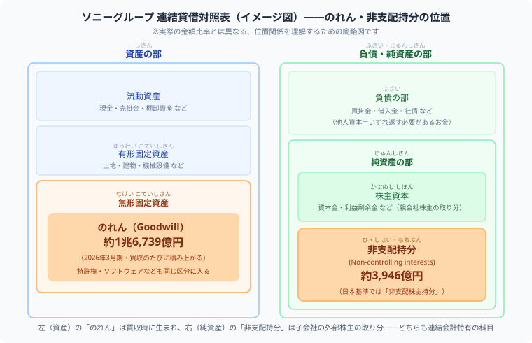
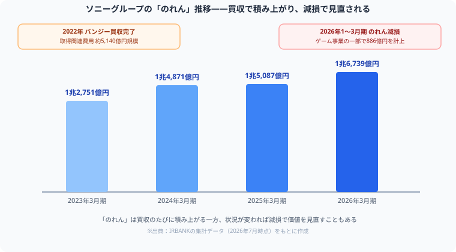

決算書の読み方 | 公開：2026年7月7日
簿記の「のれん」「非支配株主持分」は
決算書のどこにある？ソニーグループの実例で読む
著者：大谷 一輝（関西の大学3回生・日商簿記1級勉強中）
簿記2級で連結会計の仕訳を練習しても、「これが実際の決算書のどこに出てくるのか」までイメージできている人は少ないはずです。この記事では、ソニーグループが実際に公表している数値を例に、「のれん」「非支配株主持分」が連結貸借対照表のどこに、いくら載っているかを一緒に確認します。この記事はソニーグループの経営状況を評価するものではありません。公表数値を教材として、勘定科目の読み方を解説することが目的です。
受験生
連結会計の仕訳、パターンとしては解けるようになったんです。でも正直「のれん」も「非支配株主持分」も、頭の中では記号みたいになってて……。「これ、本当に実在するものなのかな？」って、ふと不安になることがあります。
大谷（簿記1級勉強中）
その不安、実は僕も最初の頃、連結修正仕訳を解きながら「うわっ、なんじゃこりゃ！非支配株主持分って名前長すぎだし架空の呪文じゃん！」ってフリーズしてました（笑）。公認会計士試験の勉強中もずっと同じ不安を抱えてたんです。テキストの中だけの架空の記号じゃないかって。でも、ある日ふとソニーグループの決算書（有価証券報告書）を開いてみたら、拍子抜けするくらいそのまま載ってたんですよ。しかも金額は兆円単位。今日はその実物を一緒に見に行きましょう。
受験生
ソニーってゲームや音楽のイメージが強くて、正直「会計」とは結びついてなかったです……。決算書のどこを見れば、その「のれん」ってやつに出会えるんですか？
大谷（簿記1級勉強中）
いい質問です。連結貸借対照表（B/S）は、いつも左に「資産の部」・右に「負債・純資産の部」を並べる箱の構造でしたよね。「のれん」は左側の資産の中、それも「無形固定資産」という棚に。「非支配株主持分」は右側の純資産の中、株主資本のすぐ下の棚に、それぞれ静かに座っています。教科書で習った「箱のどこに置くか」というルールが、そのまま実物にも適用されているのを、この後の図で確認していきましょう。
先に結論：「のれん」「非支配株主持分」は、教科書だけの概念ではなく、実際に上場企業の連結貸借対照表に金額付きで載っています。ただし、ソニーグループはIFRS（国際会計基準）で決算書を作っているため、簿記2級で習う日本基準と科目名が少し異なる点に注意が必要です。
まず、簿記2級で習う定義をおさらい
連結会計のくわしい仕組みは簿記2級の連結会計とは？連結修正仕訳・のれんを初心者向けに解説で扱っていますが、ここでは要点だけ振り返ります。
のれん = 子会社株式の取得原価 - 子会社純資産の親会社持分
非支配株主持分 = 子会社の純資産のうち、親会社以外の株主に帰属する部分
教科書の例題では、1つの子会社を買収した1回分の計算として登場します。しかし実際の大企業は、何十社もの子会社・関連会社を持っており、決算書に載っている「のれん」「非支配株主持分」は、それらすべてを合算した金額です。
受験生
定義はテキスト通りですね……。でも「何十社分を合算した金額」って言われると、逆にイメージが遠のく気もします。教科書の例題みたいに、1つの数字にはならないんですか？
大谷（簿記1級勉強中）
その感覚、正しいです。実際の決算書の「のれん」は、いわば「買収の歴史書」。ソニーグループなら、ゲーム会社、金融事業、音楽・映像事業……これまでのM&Aの積み重ねが、たった1行の数字に圧縮されています。1個の数字の裏に何十個ものストーリーがあると思うと、逆に面白くなってきませんか？
ソニーグループの連結貸借対照表を見てみよう

図：連結貸借対照表の左（資産の部）に「のれん」、右（純資産の部）に「非支配持分」が実際に載っている位置関係
ソニーグループが公表している数値をもとに、直近4年分の「のれん」の推移をまとめました。

図：「のれん」は買収のたびに積み上がり（2022年バンジー買収）、状況が変われば減損で見直される（2026年1〜3月期）
| 決算期（3月31日時点） | のれん |
|---|
| 2023年3月期 | 約1兆2,751億円 |
| 2024年3月期 | 約1兆4,871億円 |
| 2025年3月期 | 約1兆5,087億円 |
| 2026年3月期 | 約1兆6,739億円 |
1年で1,000億円以上増えている年もあり、この増加は主に新しい会社を買収したことによるものです。「のれん」は買収のたびに積み上がっていく科目だとイメージできます。
同じく「非支配持分」（簿記2級でいう非支配株主持分）の推移です。
| 決算期（3月31日時点） | 非支配持分 |
|---|
| 2023年3月期 | 約586億円 |
| 2024年3月期 | 約1,689億円 |
| 2025年3月期 | 約3,304億円 |
| 2026年3月期 | 約3,946億円 |
この数字は「ソニーグループが100%所有していない子会社の、外部株主の取り分」の合計です。金額が急増しているのは、大型の企業取得によって、100%子会社ではない会社がグループに加わったことが主な要因と考えられます。
数値の出典について：本記事の数値は、ソニーグループの有価証券報告書・決算短信をもとにした集計（参照：IRBANK、2026年7月時点）です。最新の正確な数値は、ソニーグループの公式IR資料でご確認ください。
「のれん」はどこから来たのか
ソニーグループの「のれん」が大きく増えた要因の一つに、ゲーム開発会社バンジー（Bungie）の買収（2022年完了、取得関連費用は約5,140億円規模）があります。買収した会社のブランド力や技術力、将来の収益力を見込んだ金額が、子会社の純資産を上回った分が「のれん」として計上される、という簿記の教科書通りの構造が、実際の決算書でも確認できます。
受験生
5,140億円って、正直ピンとこない金額です……。仕訳の例題だと「800,000円」みたいな数字ばかりだったので、桁が全然違いますね。
大谷（簿記1級勉強中）
桁が違うだけで、やっていることは教科書の例題と全く同じなんですよ。「取得原価 − 子会社純資産の親会社持分」という引き算の結果が、たまたま兆円単位になっているだけ。実務では金額の桁に圧倒されがちですが、簿記の目線で見れば「差額を出しているだけ」というシンプルな話だと分かると、怖さが半分になります。
用語の違いに注意：日本基準とIFRS
簿記2級で習うのは日本の会計基準（日本基準）ですが、ソニーグループのようなグローバル企業の多くは、国際的に通用するIFRS（国際会計基準）で連結財務諸表を作成しています。呼び方は違っても、意味している内容はほぼ同じです。
| 簿記2級（日本基準） | IFRS（ソニーグループの開示） |
|---|
| 非支配株主持分 | 非支配持分（Non-controlling interests） |
| のれん | のれん（Goodwill）※呼び方は共通 |
決算書を読むときは、その会社がどの会計基準を採用しているかを確認する習慣をつけると、用語の違いに戸惑わずに済みます。
受験生
「非支配株主持分」が「非支配持分」になってるのを見て、一瞬「え、覚えた用語と違う……試験で通用しないの？」って焦りました。
大谷（簿記1級勉強中）
その焦り方、実務に出た新人が最初にぶつかる壁そのものです（笑）。でも安心してください、試験で習う「非支配株主持分」で何も問題ありません。IFRSは世界共通で使うための会計基準なので、日本基準とは呼び方の流儀が違うだけ。就活や実務でIFRS採用企業の決算書を読むときに「あ、これ簿記で言うあれだ」と気づければ十分です。用語の違いにビビらず、中身が同じだと分かっていることの方が、よっぽど価値があります。
「のれん」は計上して終わりではない
ソニーグループは2026年1〜3月期に、ゲーム事業の一部で「のれんの減損」として886億円を計上しています。これは「一度計上したのれんの価値を、その後の状況変化に応じて見直す」という、簿記1級以降で学ぶ減損会計の実例です。「のれん」は将来の収益力を見積もった資産であるため、経営環境が変われば金額を見直すことがある、という点も、実際の決算書だからこそ学べるポイントです。
受験生
「減損」って言葉、正直ちょっと怖いです……。せっかく積み上げた「のれん」が減るなんて、その会社にとって悪いニュースなんじゃないですか？
大谷（簿記1級勉強中）
「怖い」という感覚、悪くないですよ。ただ、この記事の立場としては、この数字が良いか悪いかを評価するつもりはありません。大事なのは「のれんは一度計上したら永遠に固定される数字ではない」という会計の仕組みそのものです。将来の見積もりが変われば、資産の価値を見直す——これは会計が持つ、健全な自己修正の機能です。仕組みを理解することと、経営を評価することは別物だと切り分けて見る癖をつけると、決算書がぐっと読みやすくなりますよ。
決算書を読むときの注意点
- 採用している会計基準（日本基準／IFRS／米国基準）によって科目名が異なることがある
- 「のれん」「非支配株主持分」は、有価証券報告書・決算短信の連結貸借対照表（IFRSでは連結財政状態計算書）に載っている
- 数値は決算のたびに更新されるため、最新の公式IR資料を確認する
- 金額の大小だけで「良い・悪い」を判断するのは早計。金額の変動要因（買収・減損など）まで見ることが大切
この記事の位置づけ：ここで紹介した内容は、簿記の知識と実際の決算書をつなげるための「読み方」の解説です。ソニーグループの経営や株価に関する評価・判断を示すものではありません。投資判断は、必ずご自身で一次情報を確認の上、自己責任で行ってください。
まとめ
- 「のれん」「非支配株主持分」は、実際の上場企業の連結貸借対照表に金額付きで載っている
- ソニーグループの「のれん」は約1兆6,739億円（2026年3月期）、非支配持分は約3,946億円
- 「のれん」は買収のたびに積み上がり、状況によっては減損で見直されることもある
- IFRS採用企業は日本基準と科目の呼び方が異なる場合があるので注意する
- 簿記2級で学んだ知識は、暗記ではなく実際の決算書を読む力につながっている
⚔ 簿記の知識を、決算書を読む力に変えよう
スタディクエストで商業簿記の学習時間を記録し、連結会計を経験値に変えましょう。
無料で学習記録を始める →
簿記の実力は、問題を1つ解くたびに確実に積み上がっていきます。
この記事が少しでも参考になったら、この下にある【いいねボタン】をポチッと押してもらえると、めちゃくちゃ嬉しいです！ そして、Study Questで今日の学習時間を記録して、合格までの成長を「見える化」していきましょう。